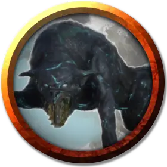

Зуб-Коготь
Tooth-N-Claw
Среднее Исчадие, законно-злое, именной НИП

Класс Доспеха 15 (природный доспех)
Хиты 45 (7к8 + 14)
Скорость 50 футов
| мод | спас | ||
|---|---|---|---|
| СИЛ | 17 | +3 | +3 |
| ЛОВ | 12 | +1 | +1 |
| ТЕЛ | 14 | +2 | +2 |
| мод | спас | ||
|---|---|---|---|
| ИНТ | 6 | −2 | −2 |
| МДР | 13 | +1 | +1 |
| ХАР | 6 | −2 | −2 |
Навыки Восприятие +5
Иммунитет к урону холод
Языки Инфернальный
Опасность 3 (700 опыта)
Бонус мастерства +2
Особенности
Языки. понимает Инфернальном, но не говорит.
Острый слух и тонкий нюх. Зуб-Коготь совершает с преимуществом проверки Мудрости (Восприятие), полагающиеся на слух и обоняние.
Тактика стаи. Зуб-Коготь совершает с преимуществом броски атаки по существу, если в пределах 5 футов от этого существа находится как минимум один дееспособный союзник Зуб-Когтя.
Действия
Укус. . Рукопашная атака оружием: +5 к попаданию, досягаемость 5 фт., одна цель. Попадание: 7 (1к8 + 3) колющего урона плюс 7 (2к6) урона холодом.
Замораживающее дыхание (Перезарядка 5–6). Зуб-Коготь выдыхает ледяной поток 15 футовым конусом. Каждое существо в этой области должно совершить спасбросок Ловкости Сл 12, получая 21 (6к6) урона холодом при провале или половину этого урона при успехе.